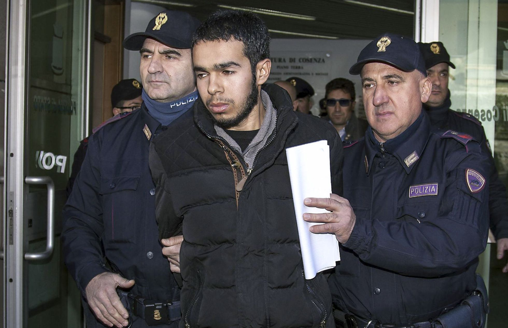

La sensación de alerta que se instaló en Europa a raíz de los atentados de París no ha disminuido. La agencia que coordina la lucha contra el terrorismo en la UE, Europol, ha advertido este lunes de nuevos riesgos de ataques del Estado Islámico (ISIS, por sus siglas en inglés). “El llamado ISIS tiene voluntad y capacidad para realizar otros ataques en Europa. Y todas las autoridades nacionales trabajan para impedirlo”, ha asegurado el director de este organismo, Rob Wainwright. Este responsable daba así voz a la principal conclusión de un informe que ha divulgado este mismo lunes Europol sobre los cambios en el modus operandi de los terroristas del Estado Islámico. “Tenemos todas las razones para esperar que el ISIS realice un ataque terrorista en algún lugar de Europa otra vez, particularmente en Francia, destinado a causar muertes masivas entre la población civil. Esto se suma a la amenaza de ataques de lobos solitarios, que no ha disminuido”, sintetiza el documento. El director de Europol ha comparecido en Ámsterdam, durante la reunión informal de ministros del Interior, para presentar el nuevo Centro Europeo contra el Terrorismo que se ha creado en el seno de Europol y que se centrará, entre otros elementos, en seguir la pista a los alrededor de 5.000 europeos que se han adherido a grupos terroristas en Siria y en Irak y que representan una seria amenaza para la seguridad en Europa. El centro está dirigido por el español Manuel Navarrete, coronel de la Guardia Civil. Respecto al controvertido nexo entre terrorismo y refugiados, el documento descarta una relación directa, pero advierte de varios riesgos: “Es posible que algunos elementos de la diáspora de refugiados sirios (musulmanes suníes) sean vulnerables a la radicalización. De hecho, hay informes que señalan que los centros de refugiados son un objetivo específico de los reclutadores extremistas”. El director de Europol ha insistido en la necesidad de compartir información sensible entre países para prevenir nuevos atentados y ha asegurado que desde los ataques de París, el pasado noviembre, el grado de intercambios de datos entre los países ha aumentado.
